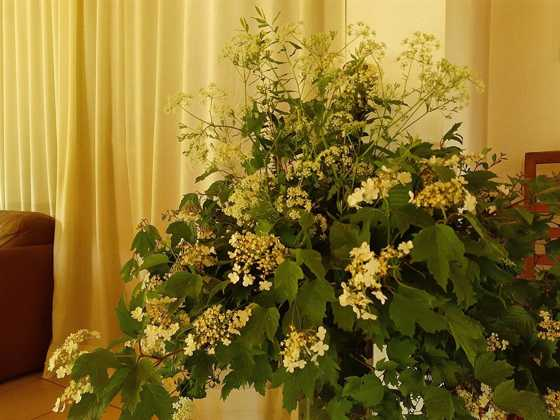
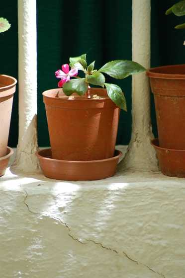
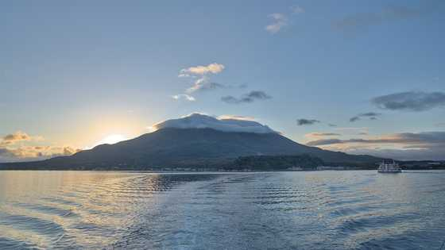
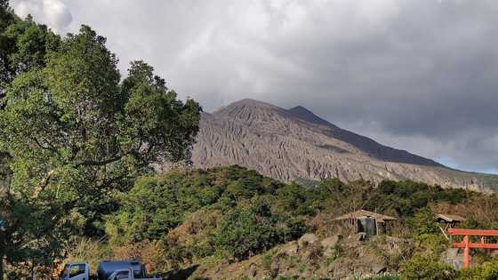
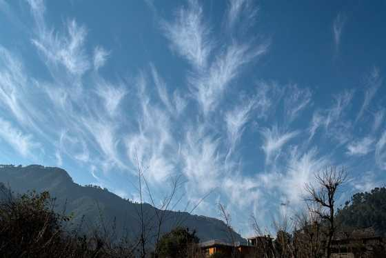
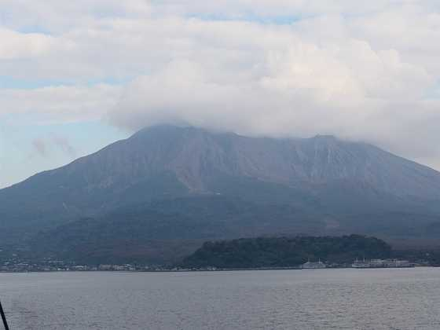
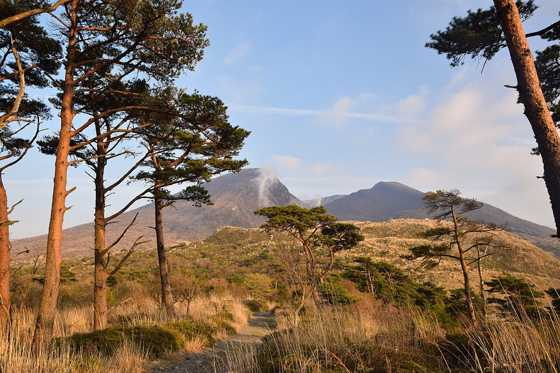
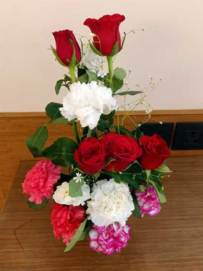

鹿児島県薩摩川内市五代町
キレイも、カッコいいも。
小さな美容室で、ていねいに。
美容室lifeは、五代町にある小さな美容室。「皆様のキレイ&カッコいいのお手伝いをさせてください」という呼びかけを、このページのテーマにしました。
お店のこと
明るく、くつろげる一軒家のサロン。
美容室lifeはInstagramで「薩摩川内市五代町にある小さな美容室」と紹介され、「皆様のキレイ&カッコいいのお手伝いをさしてください」と呼びかけています。
掲載サイトによると、店内は明るくアットホームな雰囲気で、カウンセリングを大切にし、お手入れしやすく自宅でも再現しやすいカットを特徴としているとのことです。
情報源: Instagram @life201061 / Beauty Park 店舗ページ
上記以外の文章(見出しの言い回しなど)は制作側のイメージです。店名「life」の意味は確認できていないため、記載していません。

まずはお話から
カウンセリングを大切にしているとされています。なりたい雰囲気や普段のお手入れを、気軽にお伝えください。
家でも続くカット
お手入れしやすく、再現しやすいカットが特徴と紹介されています。
小さなお店だから
ご予約制と案内している掲載もあります(詳細は準備中)。
口コミ
こんなお声が届くお店を目指して
話をよく聞いてくれて、家でも扱いやすい髪型にしてもらえました。
こぢんまりしていて落ち着きます。ついゆっくりしてしまいます。
朝のセットが楽になりました。次も同じようにお願いしたいです。
上の3件は制作側が作成したイメージ例で、実在のお客様の声ではありません。
薩摩の空気
鹿児島の景色とともに







フリー素材のイメージです。
写真クレジット
掲載写真はWikimedia Commonsのフリー素材(イメージ)です。
- photo01: CEphoto, Uwe Aranas(Cebu City) / CC BY-SA 3.0
- photo02: Lisa Risager / CC BY-SA 2.0
- photo03: Inkwina / CC BY-SA 3.0
- photo04: The Modern Polymath(鹿児島市) / CC BY-SA 4.0
- photo05: The Modern Polymath(鹿児島湾) / CC BY-SA 4.0
- photo06: Drivephotographer(鹿児島湾) / CC0
- photo08: ADARSHluck / CC BY-SA 4.0
- photo10: HanSangYoon / CC BY-SA 4.0
- photo11: Gerda Arendt(Ehrenbach) / CC0
- photo14: Hyppolyte de Saint-Rambert(桜島フェリー) / CC BY 4.0
- photo15: Raita Futo(霧島) / CC BY 2.0
- photo17: Andy Hawkins(Madeira) / CC BY-SA 2.0
- photo18: Suyash Dwivedi / CC BY-SA 4.0
出典ページ・詳細は _notes/photo_credits.md に記録しています。